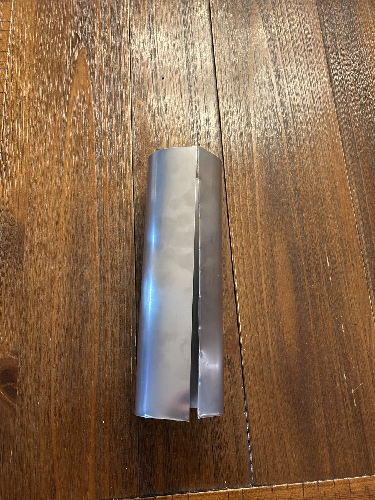
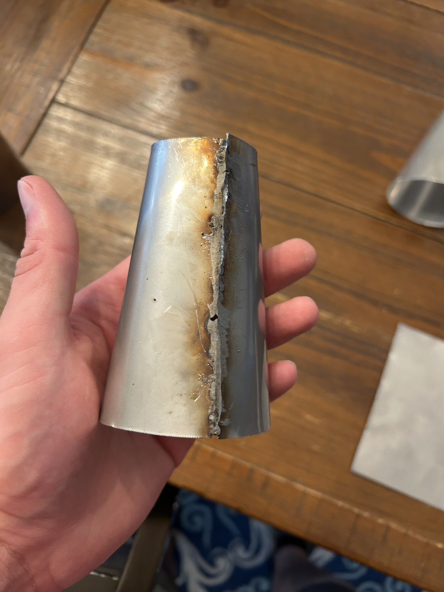

06 / Development project / First iteration
Small-Scale Motorjet — First Iteration
A personal development project exploring a small-scale motorjet, with independently verified electrical and ignition subsystems before thin-sheet fabrication challenges stopped the first iteration.
Original Goal & System Concept
I originally set out to build a small-scale jet engine, but determined that designing and manufacturing a turbine from scratch was beyond the practical scope of the project. I revised the concept into a motorjet using an electric ducted fan (EDF) to provide airflow while retaining a separate combustion system.
The motorjet concept used the EDF to drive airflow through a diffuser and around the combustion chamber before the flow exited through a downstream nozzle. The project required the mechanical, electrical, ignition, and airflow systems to ultimately function as one integrated assembly.
System Design
I developed the overall system concept and designed the casing, structural supports, combustion chamber, and electrical and ignition layouts. The system also required integration of the EDF, diffuser, bypass airflow path, downstream nozzle, electrical controls, and purchased drive components into a compact assembly.
Purchased components were selected around the requirements of the design, while the structural and integration features were developed specifically for the motorjet.
Subsystem Verification
Before attempting full-system integration, I independently tested the electrical/control and ignition subsystems. The EDF and throttle-control system operated successfully during bench testing, and the ignition system was also verified separately. These tests confirmed subsystem functionality before the project reached the structural integration stage.
Fabrication Challenge & First-Iteration Failure
I formed the cylindrical casing from 24-gauge steel, but reliably joining the thin sheet became the limiting problem in the first iteration. The casing, combustion chamber, diffuser, and nozzle all depended on joints that could maintain the structure of the integrated assembly.
I attempted welding and brazing before trying an adhesive repair after the earlier methods were unsuccessful. None produced joints I considered reliable enough to continue into full-system testing. The project ultimately reached the limit of my available fabrication capability rather than a failure of the independently tested electrical or ignition subsystems.
The project stopped before full-system testing.




Next Iteration
A second iteration would begin by designing the casing and joints around a fabrication process that is known to be achievable. I would retain responsibility for the system and mechanical design while working with an experienced fabricator for the critical thin-sheet joints. This would address the primary bottleneck from the first build and allow the integrated system to progress into testing.